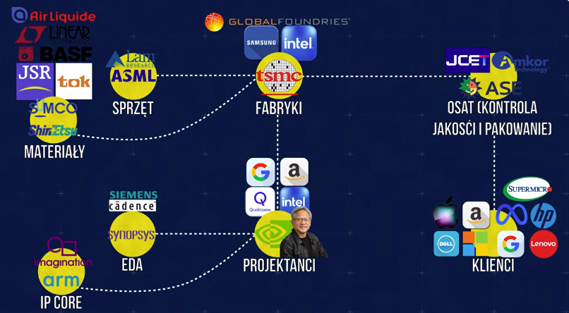

Grafika obrazuje jak wygląda produkcja w globalnej gospodarce. Firmy obecnie specjalizują się w konkretnej branży będącej częścią tej większej, zamiast zajmować się wszystkim naraz. Pozwala im to unikać ryzyka przeciążenia kontrolą całego procesu produkcji, jak to miało miejsce w XX wieku. Obecnie punkt wartości został przeniesiony z fizycznej produkcji na własność prawną, intelektualną oraz inżynierie.

Wstecz